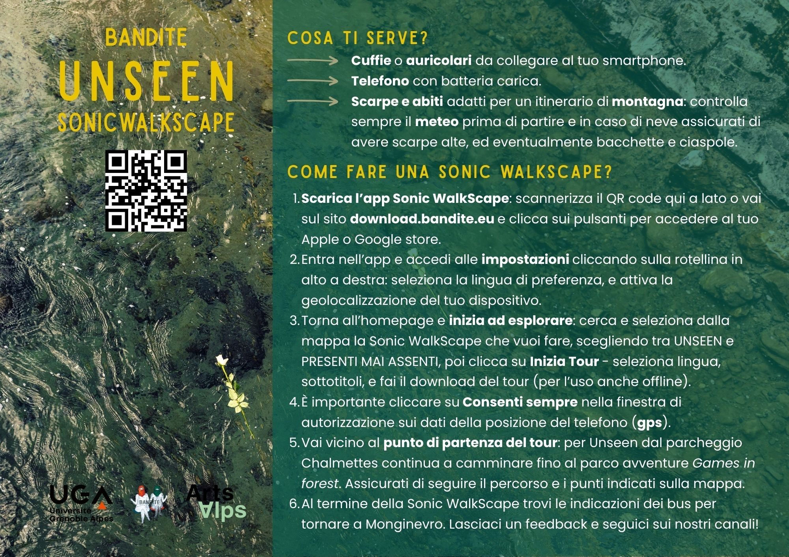

Montgenèvre — La Vachette (FR) · 2026
UNSEEN was created to remember Blessing Matthew and all those who have lost their lives crossing borders. This sonic walkscape is dedicated to them—an immersive walk that seeks to restore voice to stories forced into invisibility.
This Sonic WalkScape follows the paths between Montgenèvre and La Vachette through a journey of listening and, at the same time, participation, as an act of collective memory. An immersive sonic narrative composed of voices, sounds, and landscapes, it is presented on the occasion of Commemor-Action 2026, the international day of struggle against the regime of death and violence at borders and in remembrance of the victims of border policies. The score is made up of testimonies from activists and volunteers, field recordings, sounds and original music, together with data on the case of Blessing Matthew gathered by geographer and researcher Cristina Del Biaggio—who took part in the counter-investigation alongside Border Forensics and the association Toutes et Tous Migrants. Through a custom app developed by BANDITE, the public is invited to walk along the mapped route, with an invitation to immerse themselves in the sounds and in the traversal of the Alpine border landscape.
Sonic WalkScape is a format conceived by the collective BANDITE that brings together artistic and sonic practice, fieldwork, and the active involvement of local communities. Developed through a custom app, it takes shape as a site-specific and participatory work capable of weaving together territory, memory, and community through storytelling and walking. Each Sonic WalkScape is reworked and reconfigured according to the context in which it emerges. It functions as a mobile sound installation in which participants, equipped with smartphones and headphones, are guided along a defined route via a map with geolocated points. At each point, original audio content—voices, testimonies, songs, field recordings, and environmental sounds—activates, gathered and composed during fieldwork or created specifically for the piece. The walk thus becomes an in/visible itinerary made of layered sonic and narrative traces, offering a sensitive and plural reading of the place.
UNSEEN nasce per ricordare Blessing Matthew e tutte le persone che hanno perso la vita attraversando le frontiere. A loro è dedicata questa sonic walkscape, una cammino sonora che vuole restituire voce alle storie che vengono costrette all’invisibilità.
Questa Sonic WalkScape attraversa i sentieri tra Montgenèvre e La Vachette attraverso un viaggio d’ascolto, e al tempo stesso partecipazione, in un atto di memoria collettiva. Un racconto sonoro immersivo fatto di voci, suoni e paesaggi, presentato in occasione della Commemor-Action 2026, la giornata internazionale di lotta contro il regime di morte e violenza delle frontiere, e ricordo delle vittime delle politiche di frontiera. La partitura è composta da testimonianze di attivistë e volontarië, field recordings, suoni e musiche originali, uniti ai dati sul caso di Blessing Matthew raccolti dalla geografa e ricercatrice Cristina Del Biaggio – che ha partecipato alla contro-inchiesta insieme a Border Forensics e all’associazione Toutes et Tous Migrants. Attraverso un’app personalizzata e sviluppata da BANDITE, il pubblico è invitato a camminare seguendo il percorso indicato da una mappa, con l’invito ad immergersi nei suoni e nell’attraversamento del paesaggio alpino frontaliero.
